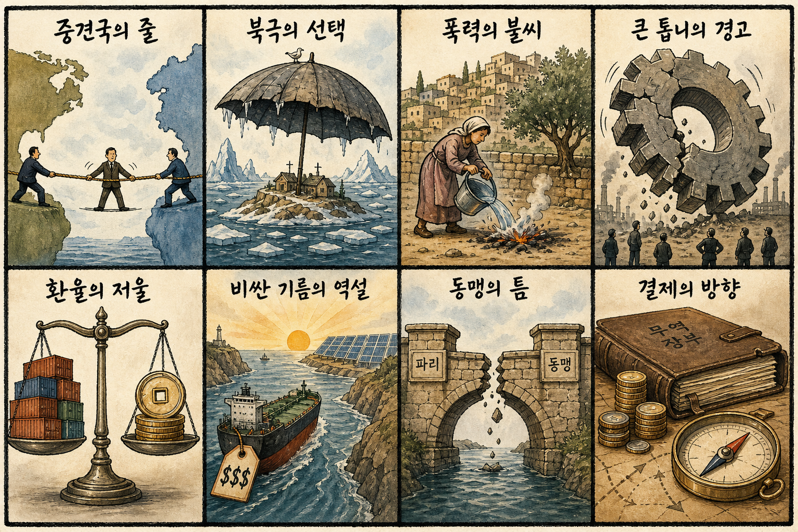
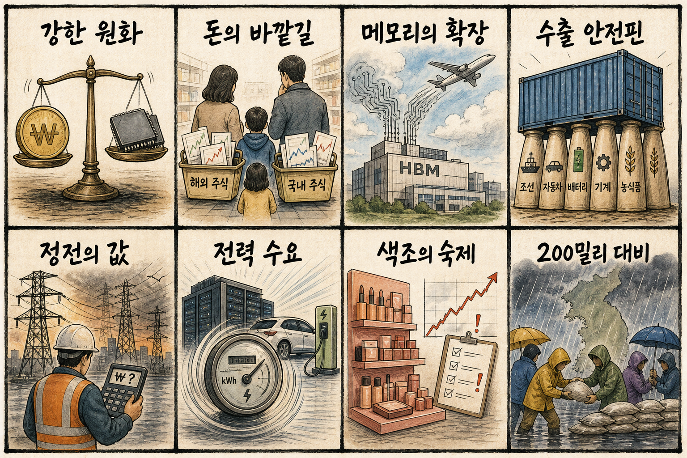

01
크라우드스트라이크 · 228.49→218.40달러 · -4.42%
내용요약 시가 대비 4.42% 하락하며 전일 급등분 일부를 되돌렸습니다.
예상여파 국내 보안 소프트웨어주의 단기 심리에 부담이며 변동성 확대를 경계합니다.
MORNING_BRIEFING_20260830
작성 시각: 2026-08-30 06:37 KST · 직전 미국 정규장과 2026-08-30 KST 당일 공개 기사 기준
직전 미국 정규장인 8월 28일에는 다우 -0.02%, S&P 500 -0.25%, 나스닥 -0.52%로 동반 약세였습니다. 엔비디아는 시가 대비 -4.30%, 크라우드스트라이크 -4.42%, 마벨 -3.86%로 AI 하드웨어·보안주가 밀린 반면 아마존 +3.14%, 알파벳 +1.71%, 마이크로소프트 +1.62%는 방어했습니다. 국내 증시는 일요일 휴장이며 월요일에는 전일 급락한 대형 반도체와 원화 흐름을 함께 확인해야 합니다.
| 지수 | 종가 | 등락률 | 한국 증시 시사점 |
|---|---|---|---|
| 다우존스 | 53,559.99 | -0.02% | 경기주 중립 |
| S&P 500 | 7,711.76 | -0.25% | 기술주 차익실현 경계 |
| 나스닥 종합 | 26,402.42 | -0.52% | 기술주 차익실현 경계 |
엔비디아와 AI 하드웨어가 밀리며 기술주가 숨을 골랐습니다.
오늘은 거래가 없으며 월요일 시초가 추격을 피합니다.
연준의 물가 우선 발언과 일본은행 긴축 가능성을 봅니다.
휴장일이며 검증 문턱을 통과한 후보가 없습니다.
8월 29일 보고서는 검증 문턱을 통과한 후보가 없어 공식 추천을 내지 않았습니다. 게시 당시 판단은 그대로 유지되며 사후 종목을 추가하지 않습니다.
| 시장 | 종가 | 등락률 | 해석 |
|---|---|---|---|
| KOSPI | 6,788.88 | -1.79% | 28일 시가 대비 -0.84% |
| KOSDAQ | 838.41 | +0.09% | 28일 시가 대비 +0.38% |
| 다우존스 | 53,559.99 | -0.02% | 보합 |
| S&P 500 | 7,711.76 | -0.25% | 기술주 약세 |
| 나스닥 종합 | 26,402.42 | -0.52% | 기술주 약세 |
아마존이 시가 대비 +3.14%로 강했습니다.
알파벳 +1.71%, 마이크로소프트 +1.62%였습니다.
엔비디아 -4.30%, 마벨 -3.86%, 어플라이드머티리얼즈 -3.41%였습니다.
크라우드스트라이크가 시가 대비 -4.42%로 밀렸습니다.
내용요약 시가 대비 4.42% 하락하며 전일 급등분 일부를 되돌렸습니다.
예상여파 국내 보안 소프트웨어주의 단기 심리에 부담이며 변동성 확대를 경계합니다.
내용요약 AI 반도체 차익실현 속 시가 대비 4.30% 하락했습니다.
예상여파 국내 HBM 대형주의 월요일 시초가에 부담이 될 수 있어 갭 하락 뒤 수급 확인이 우선입니다.
내용요약 AI 네트워크 반도체가 시가 대비 3.86% 하락했습니다.
예상여파 AI 인프라 내에서도 네트워크·맞춤형 칩 종목의 고평가 부담이 부각될 수 있습니다.
내용요약 대형 기술주 약세 속에서도 시가 대비 3.14% 상승했습니다.
예상여파 클라우드와 소비 플랫폼의 상대강도는 기술주 내부 순환매 가능성을 보여줍니다.
내용요약 AI 소프트웨어·클라우드 선호로 시가 대비 1.62% 상승했습니다.
예상여파 하드웨어 약세와 소프트웨어 강세의 차별화가 국내 관련주에도 이어질 수 있습니다.
오늘은 일요일로 국내 증시가 휴장입니다. 월요일에는 나스닥 -0.52%와 엔비디아 -4.30%가 전일 KOSPI에서 약했던 대형 반도체에 추가 부담을 줄 수 있습니다. 반면 아마존·알파벳·마이크로소프트의 상대강도는 AI 소프트웨어·플랫폼의 선택적 방어 가능성을 보여줍니다. 8월 28일 KOSPI는 시가 대비 -0.84%였고 KOSDAQ은 +0.38%로 차별화돼, 월요일에도 지수보다 원화와 외국인 수급을 먼저 확인합니다.
오늘은 추천 없음 — 현금 관망
일요일 국내 증시 휴장이고, 전일까지의 외국인·기관 수급, 컨센서스 변화, 30건 이상 유사 조건 확률 보정, 예상 손익비 1.5 이상을 동시에 검증한 종목이 없습니다. 종합점수와 상승확률을 임의로 만들지 않습니다.
관심 연결종목 AI 소프트웨어, 원전·전력, 환율 민감 수출주는 뉴스 연결 관찰 대상일 뿐 매수 추천이 아닙니다. 월요일 개장 초 급등락 종목은 추격매수 금지입니다.
주간 고용지표와 연준의 물가 우선 기조가 금리 기대를 어떻게 바꾸는지 봅니다.
반도체 호조의 지속성과 수출 품목 다변화를 점검합니다.
원화 강세가 월요일 수출주와 외국인 매매에 미치는 영향을 봅니다.
최대 200㎜ 이상 예보에 침수·산사태·교통 통제를 우선 확인합니다.
핵심 요약: AI 인프라 경쟁은 CPO 광연결, 미국 HBM 생산, 휴머노이드 제어 부품으로 넓어지고 있습니다. 현장에서는 피지컬 AI의 실행 신뢰성과 생성형 AI 보안을 뒷받침할 인재·산업 생태계가 핵심 과제로 떠올랐습니다.
내용요약 AI 데이터센터의 전력·발열 병목을 줄이기 위해 전기 배선 대신 광신호를 칩 가까이 연결하는 CPO 분야의 한·미 협력이 본격화됐다는 보도입니다.
예상여파 CPO 상용화가 빨라지면 광부품·패키징·네트워크 장비 투자가 늘 수 있지만 양산 수율과 표준 경쟁이 성패를 가를 수 있습니다.
내용요약 SK하이닉스가 HBM 생산 거점으로 추진하는 미국 인디애나 공장 착공 소식입니다.
예상여파 미국 내 AI 메모리 공급망이 강화되는 한편 초기 투자비와 현지 인력 확보, 고객 수요의 지속성이 핵심 변수가 됩니다.
내용요약 유티정보와 한국로봇융합연구원이 관제에서 현장 조치까지 연결하는 피지컬 AI 공동연구에 나섰다는 보도입니다.
예상여파 영상 분석이 실제 로봇 행동으로 이어지면 안전·물류·시설관리 자동화가 확대될 수 있으나 현장 신뢰성과 책임 기준이 중요합니다.
내용요약 일본 반도체 기업 르네사스가 베이징 AI 연구소를 열고 휴머노이드 부품 시장 공략에 나섰다는 당일 보도입니다.
예상여파 로봇용 제어칩·센서·전력반도체 경쟁이 격화되며 중국 현지 생태계와 글로벌 공급망의 결합이 빨라질 수 있습니다.
내용요약 마이크로소프트 보안 부사장이 AI 발전이 방어자에게도 이점을 주며 한국은 인재를 뒷받침할 보안산업을 키워야 한다고 강조했습니다.
예상여파 생성형 AI 확산과 함께 자동 탐지·대응 수요가 커지고, 보안 인력·데이터·산업 생태계 투자의 중요성이 높아질 수 있습니다.
핵심 요약: 미국의 압박에 대응하는 중견국·북대서양 국가의 선택이 흔들리는 가운데 서안 폭력 억제의 실행력이 주목됩니다. 중국 경제 위험과 위안화 절상 압박은 세계 무역과 아시아 수출국의 새 변수입니다.
내용요약 캐나다 총리가 미국의 압박에 맞서 중견국 연대를 제안했지만 다수 국가의 호응이 제한적이었다는 보도입니다.
예상여파 미·중 사이 중견국 공조의 현실적 한계가 드러나며 통상·안보 현안별 선택적 연대가 늘어날 수 있습니다.
내용요약 그린란드를 둘러싼 미국의 압박이 북대서양 안보 불안을 키우면서 아이슬란드의 유럽연합 가입 논의가 초박빙 구도로 전개된다는 보도입니다.
예상여파 북극권 안보와 경제 협력이 결합되며 유럽연합 확대와 북대서양 외교 지형에 영향을 줄 수 있습니다.
내용요약 이스라엘 총리가 서안 정착민의 폭력을 이례적으로 규탄하고 일부 행위를 범죄로 규정했다는 보도입니다.
예상여파 실제 단속과 책임 추궁으로 이어지는지가 서안 긴장 완화와 국제사회의 신뢰를 가를 수 있습니다.
내용요약 중국 경제의 구조적 불균형이 다음 글로벌 위기의 진원지가 될 수 있다는 전문가 경고를 다룬 보도입니다.
예상여파 부동산·부채·내수 둔화가 심화하면 원자재와 아시아 수출국, 글로벌 금융시장으로 충격이 번질 수 있습니다.
내용요약 미국과 유럽이 위안화 절상을 압박하면서 글로벌 수출 가격 경쟁의 재편 가능성이 제기됐습니다.
예상여파 위안화가 강해지면 중국 수출품 가격과 아시아 경쟁국 환율, 한국 제조업의 가격 경쟁력에 연쇄 영향을 줄 수 있습니다.

핵심 요약: 원화 강세와 해외주식 자금 이동이 국내 증시 수급을 가르는 가운데, 반도체 의존을 낮출 수출 다변화와 전력망 복원력이 중요해졌습니다. 오늘은 충청·남부의 최대 200㎜ 이상 집중호우에 우선 대비해야 합니다.
내용요약 국제금융협회가 반도체 호조를 근거로 원화의 실질 가치가 코로나19 이전 수준을 회복할 가능성을 제시했다는 보도입니다.
예상여파 원화 강세는 수입물가를 낮추지만 달러 매출이 큰 수출기업에는 환산 실적 부담이 될 수 있어 업종별 차별화가 예상됩니다.
내용요약 국내 개인투자자가 최근 두 달간 미국 주식을 약 10조원 순매수해 국내 주식 매수보다 규모가 컸다는 보도입니다.
예상여파 해외자산 선호가 이어지면 국내 수급 기반이 약해질 수 있고 환율 변동이 개인 자산 성과에 미치는 영향도 커집니다.
내용요약 한국의 월 수출 1,000억달러 시대를 전망하면서 반도체 경기 둔화에도 버틸 산업 다변화가 필요하다는 전문가 진단입니다.
예상여파 수출 품목과 시장이 넓어져야 반도체 사이클과 특정 국가 수요 변화에 따른 성장률 변동을 줄일 수 있습니다.
내용요약 한국전력이 배전선로별 정전 피해액을 직접 산출해 투자 우선순위와 복구 체계를 정교화한다는 보도입니다.
예상여파 전력망의 경제적 위험을 수치화하면 노후 설비 투자와 산업단지·데이터센터의 복원력 강화가 빨라질 수 있습니다.
내용요약 오늘 전국에 돌풍과 천둥을 동반한 비가 내리고 충청권 일부에는 200㎜가 넘는 집중호우가 예보됐습니다.
예상여파 침수·산사태·교통 통제 가능성이 큰 만큼 지하공간과 하천 주변 접근을 피하고 사업장 시설 점검이 필요합니다.
